用法：A型题点选项即判；X型题先多选、再点【判卷】；答完自动展开解析。刷完本课再过一遍底部【本课速记卡】，效果最好。
一、危险因素4 题
A型·单选Q1P1 · 危险因素
下列不属于动脉粥样硬化危险因素的是
答案与解析
答案：B
讲义特别标注：AS 危险因素『没有饮酒』。危险因素：高血脂、继发高血脂疾病、高血压、吸烟、中老年男性、代谢综合征。
📖 讲义定位：P1 · 危险因素
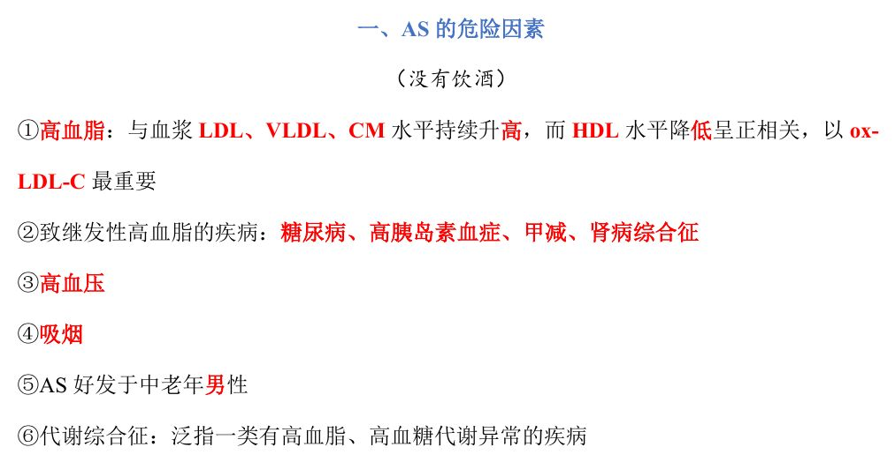
📷 讲义原图 · P1 · 危险因素
A型·单选Q2P1 · 危险因素
动脉粥样硬化最重要的脂质因素是
答案与解析
答案：A
AS 与血浆 LDL、VLDL、CM 持续升高及 HDL 降低正相关，以 ox-LDL-D 最重要。
📖 讲义定位：P1 · 危险因素
A型·单选Q3P1 · 危险因素
下列疾病可继发高血脂的是
答案与解析
答案：C
致继发性高血脂的疾病：糖尿病、高胰岛素血症、甲减、肾病综合征。
📖 讲义定位：P1 · 危险因素
X型·多选Q4P1 · 危险因素
动脉粥样硬化的危险因素有
答案与解析
答案：ABD
C 错：HDL 升高是保护因素（AS 与 HDL 降低正相关）。
📖 讲义定位：P1 · 危险因素
二、发病机制与病理变化7 题
A型·单选Q5P1 · 发病机制
动脉粥样硬化发生的始动环节是
答案与解析
答案：D
始动环节＝血管内皮细胞慢性反复损伤（常见因素：ox-LDL-C、机械性因素、吸烟、毒素、病毒等）。
📖 讲义定位：P1 · 发病机制
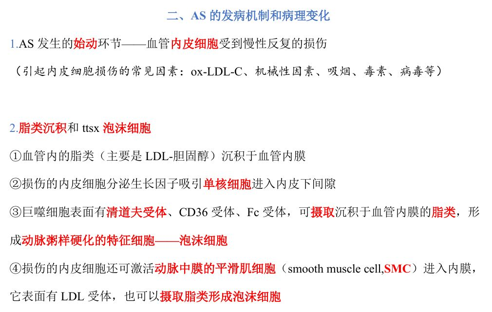
📷 讲义原图 · P1 · 发病机制
A型·单选Q6P1–2 · 泡沫细胞
动脉粥样硬化的特征细胞是
答案与解析
答案：A
泡沫细胞（吞噬脂类形成）是 AS 的特征细胞。
📖 讲义定位：P1–2 · 泡沫细胞
A型·单选Q7P2 · 脂纹
构成脂纹的泡沫细胞主要来源于
答案与解析
答案：D
泡沫细胞＝单核-巨噬细胞＋平滑肌细胞吞噬脂类形成。
📖 讲义定位：P2 · 脂纹
A型·单选Q8P1 · 泡沫细胞
巨噬细胞表面与摄取脂类有关的受体是
答案与解析
答案：B
巨噬细胞表面有清道夫受体、CD36 受体、Fc 受体；LDL 受体主要与 SMC 摄取脂类有关（D 错）。
📖 讲义定位：P1 · 泡沫细胞
A型·单选Q9P2 · 脂纹
动脉粥样硬化最早的病理改变是
答案与解析
答案：C
最早＝脂纹：泡沫细胞大量聚集→肉眼可见点状、条状黄色隆起。
📖 讲义定位：P2 · 脂纹
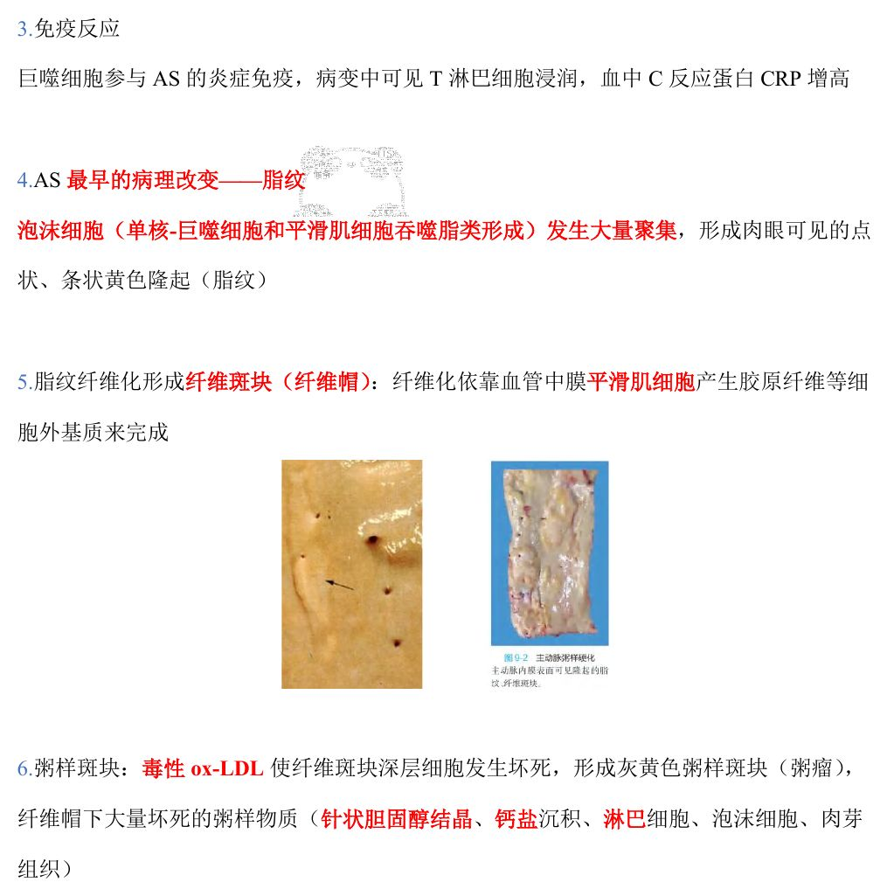
📷 讲义原图 · P2 · 脂纹
A型·单选Q10P2 · 纤维斑块
纤维斑块（纤维帽）的形成主要依靠
答案与解析
答案：D
脂纹纤维化形成纤维斑块（纤维帽）：依靠血管中膜平滑肌细胞产生胶原纤维等细胞外基质完成。
📖 讲义定位：P2 · 纤维斑块
A型·单选Q11P2 · 粥样斑块
粥样斑块（粥瘤）纤维帽下的坏死粥样物质中可见
答案与解析
答案：A
粥样斑块：毒性 ox-LDL 使纤维斑块深层细胞坏死→灰黄色；纤维帽下大量坏死粥样物质（针状胆固醇结晶、钙盐沉积、淋巴细胞、泡沫细胞、肉芽组织）。
📖 讲义定位：P2 · 粥样斑块
三、斑块的继发改变2 题
X型·多选Q12P3 · 继发改变
AS 斑块的继发改变有
答案与解析
答案：ABD
继发改变：斑块内出血、破裂形成溃疡、动脉瘤、营养不良性钙化、血栓形成、动脉狭窄/栓塞/梗死；C 不属于继发改变（C 错）。
📖 讲义定位：P3 · 继发改变
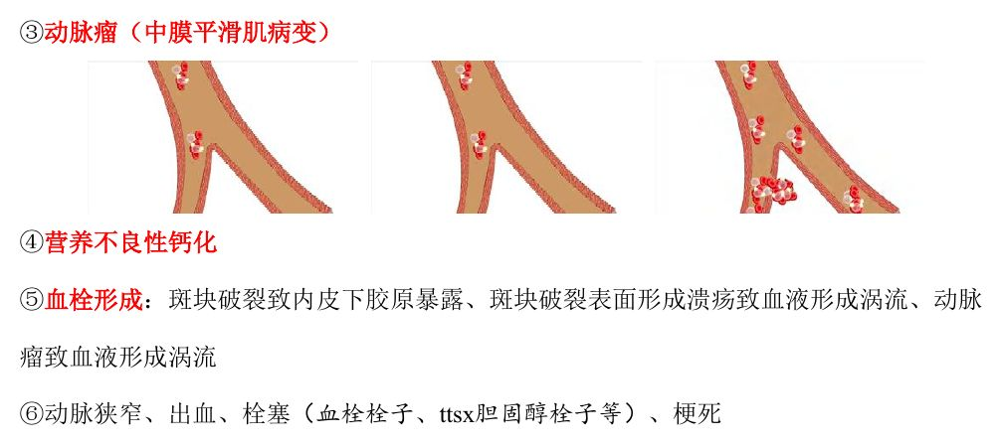
📷 讲义原图 · P3 · 继发改变
A型·单选Q13P3–4 · 继发改变
AS 斑块处血栓形成的机制是
答案与解析
答案：B
血栓形成机制：①斑块破裂→内皮下胶原暴露 ②溃疡/动脉瘤→血液形成涡流。
📖 讲义定位：P3–4 · 继发改变
四、好发部位与后果10 题
A型·单选Q14P4 · 冠状动脉
AS 累及全身动脉，对人体危害最大的是
答案与解析
答案：C
AS 好发于中、大动脉；累及冠状动脉最严重（冠状动脉属于中动脉）。
📖 讲义定位：P4 · 冠状动脉
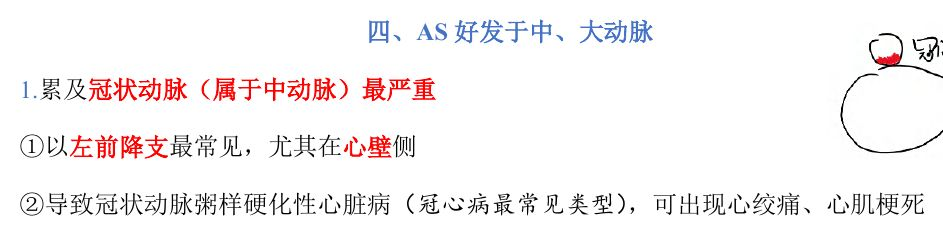
📷 讲义原图 · P4 · 冠状动脉
A型·单选Q15P4 · 冠状动脉
冠状动脉粥样硬化最常见于
答案与解析
答案：C
冠脉以左前降支最常见，尤其在心壁侧；可致冠心病（心绞痛、心肌梗死）。
📖 讲义定位：P4 · 冠状动脉
A型·单选Q16P5 · 心肌梗死
心肌梗死灶呈苍白色，其梗死类型属于
答案与解析
答案：B
心梗灶呈苍白色（贫血性梗死）；早期心肌细胞凝固性坏死——核固缩、碎裂、溶解消失，胞质均质红染或不规则粗颗粒状（收缩带）。
📖 讲义定位：P5 · 心肌梗死
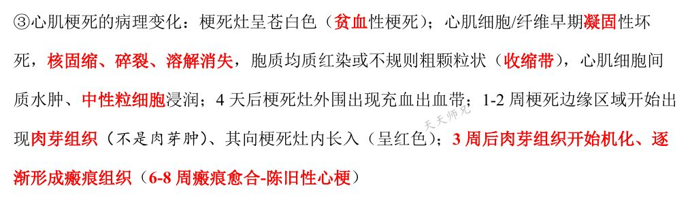
📷 讲义原图 · P5 · 心肌梗死
A型·单选Q17P5 · 心肌梗死
急性心肌梗死 1～2 周时，梗死灶边缘区域的主要改变是
答案与解析
答案：A
1–2 周：梗死边缘出现肉芽组织（不是肉芽肿）、向梗死灶内长入；4 天：外围充血出血带；3 周机化；6–8 周瘢痕愈合（陈旧性心梗）。
📖 讲义定位：P5 · 心肌梗死
A型·单选Q18P5 · 主动脉
主动脉粥样硬化最严重的部位是
答案与解析
答案：D
主动脉以腹主动脉最严重（后壁及分支开口处）；升主动脉受累可致主动脉瓣狭窄/关闭不全。
📖 讲义定位：P5 · 主动脉
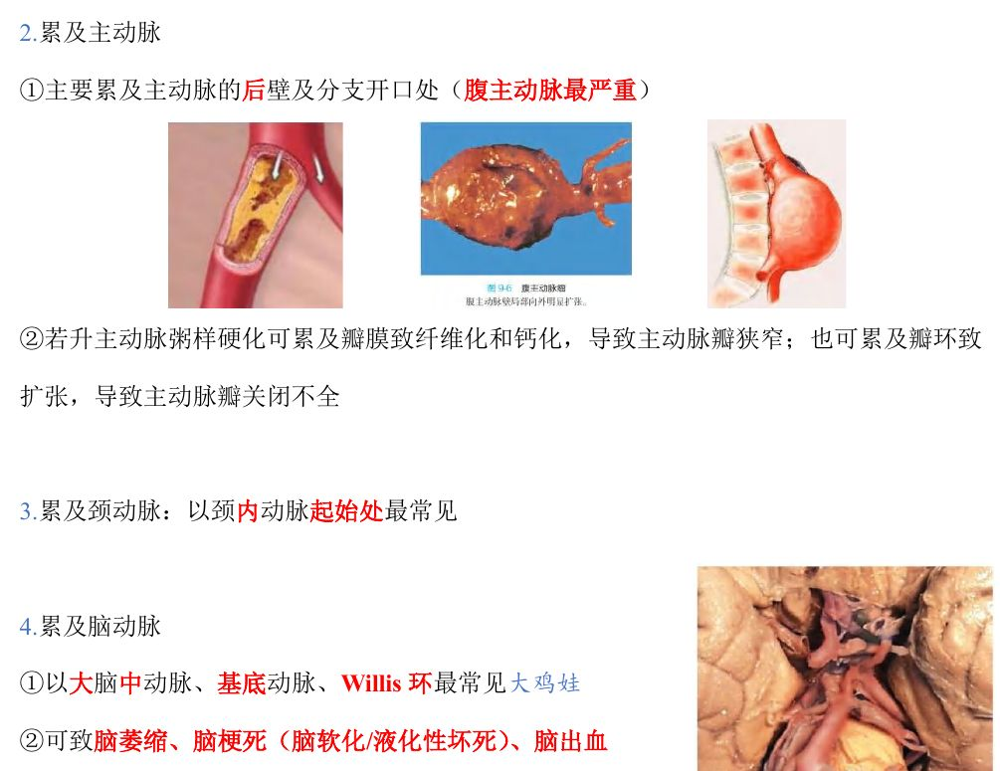
📷 讲义原图 · P5 · 主动脉
A型·单选Q19P5–6 · 脑动脉
脑动脉粥样硬化最常累及的部位是
答案与解析
答案：A
脑动脉以大脑中动脉、基底动脉、Willis 环最常见；可致脑萎缩、脑梗死（脑软化/液化性坏死）、脑出血。
📖 讲义定位：P5–6 · 脑动脉
A型·单选Q20P6 · 肾动脉
肾动脉粥样硬化最常累及的部位及其后果是
答案与解析
答案：D
肾动脉：以开口处及主动脉近侧端最常见→动脉粥样硬化性固缩肾（大瘢痕肾）。
📖 讲义定位：P6 · 肾动脉
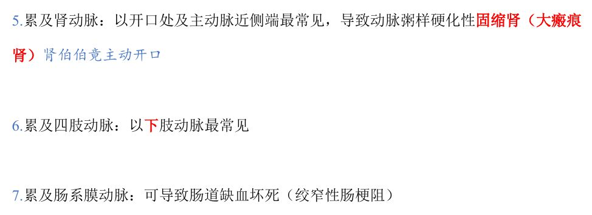
📷 讲义原图 · P6 · 肾动脉
A型·单选Q21P6 · 肠系膜动脉
AS 累及肠系膜动脉可导致
答案与解析
答案：C
肠系膜动脉受累可致肠道缺血坏死（绞窄性肠梗阻）。
📖 讲义定位：P6 · 肠系膜动脉
A型·单选Q22P5 · 颈动脉
颈动脉粥样硬化最常累及的部位是
答案与解析
答案：B
颈动脉以颈内动脉起始处最常见。
📖 讲义定位：P5 · 颈动脉
X型·多选Q23P5 · 心肌梗死
新鲜心肌梗死区域的病理变化有
答案与解析
答案：BCD
A 错：心肌梗死出现的是肉芽组织，不是肉芽肿。
📖 讲义定位：P5 · 心肌梗死
本课速记卡
AS 危险因素
- 高血脂：LDL/VLDL/CM↑、HDL↓（以 ox-LDL-C 最重要）
- 继发性高血脂疾病：糖尿病、高胰岛素血症、甲减、肾病综合征
- 高血压、吸烟、中老年男性、代谢综合征
- ★没有饮酒
发病机制与病变演进
- 始动环节：血管内皮细胞慢性反复损伤
- 特征细胞：泡沫细胞（单核-巨噬细胞＋平滑肌细胞吞噬脂类）
- 演进：脂纹（最早）→纤维斑块（纤维帽←中膜 SMC）→粥样斑块（坏死粥样物质：胆固醇结晶、钙盐…）
- 免疫：T 淋巴细胞浸润、血 CRP 增高
斑块继发改变
- 斑块内出血、斑块破裂溃疡、动脉瘤（中膜 SMC 病变）、营养不良性钙化
- 血栓形成：内皮下胶原暴露＋溃疡/动脉瘤涡流
- 动脉狭窄、栓塞（血栓/胆固醇栓子）、梗死
好发部位速记
- 冠脉最严重：左前降支（心壁侧）→冠心病、心肌梗死
- 心梗：苍白色贫血性梗死；4 天充血出血带；1–2 周肉芽组织；6–8 周瘢痕
- 主动脉：腹主动脉（后壁及分支开口）
- 颈动脉：颈内动脉起始处；脑动脉：大脑中动脉、基底动脉、Willis 环
- 肾动脉：开口处及主脉近侧端→大瘢痕肾；四肢：下肢；肠系膜：绞窄性肠梗阻
📚 网站题库（导入）3 组 · 6 题
说明：本部分为外部题库导入（来源：「西综题库」网站 · 病理学），题干、选项与答案保留原样；标注「教师补充」的答案未经讲义逐项复核。做题方式：点字母选择（多选后点【判卷】；答案可点开「答案与出处」查看）。
动脉粥样硬化斑块的形成B型题
A 巨噬细胞摄取脂类
B 依靠SMC产生胶原纤维
C 钙盐沉积
D 依靠成纤维细胞产生胶原纤维
E 针状胆固醇结晶
F 动脉中膜平滑肌细胞摄取脂类
G 肉芽组织
H 泡沫细胞发生大量聚集
I 毒性ox-LDL使纤维斑块深层细胞发生坏死
J 淋巴细胞
网站题W1第9讲 · 第1页
泡沫细胞的来源
答案与出处
答案：AF
📖 第9讲 · 第1页
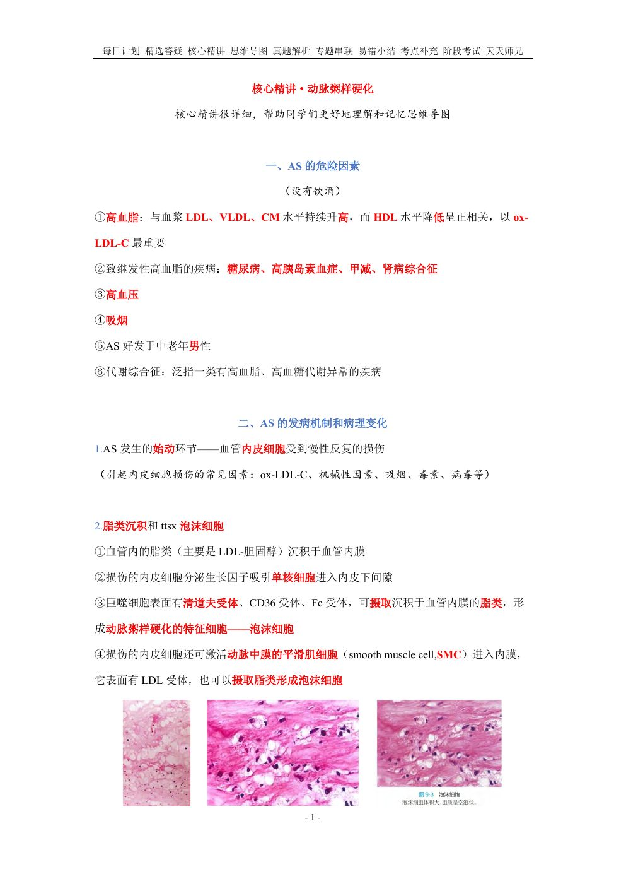
📷 讲义原图 · 第9讲 · 第1页
网站题W2第9讲 · 第2页
脂纹
答案与出处
答案：AFH
📖 第9讲 · 第2页
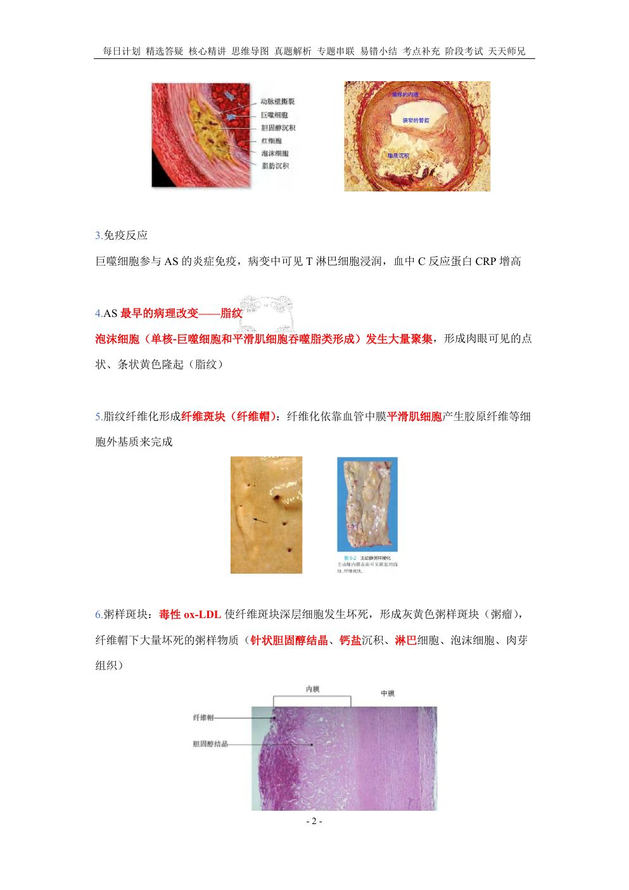
📷 讲义原图 · 第9讲 · 第2页
网站题W3第9讲 · 第2页
纤维斑块
答案与出处
网站题W4第9讲 · 第2页
粥样斑块
答案与出处
在动脉粥样硬化的早期病变中,最早进入动脉内膜的细胞是单项选择教师补充
A 单核细胞
B 成纤维细胞
C 平滑肌细胞
D 内皮细胞
网站题W5第9讲 · 第1页
在动脉粥样硬化的早期病变中,最早进入动脉内膜的细胞是(单选)
答案与出处
动脉粥样硬化累及主动脉时,病变程度最严重的部位在单项选择教师补充
网站题W6第9讲 · 第5页
动脉粥样硬化累及主动脉时,病变程度最严重的部位在(单选)
答案与出处
答案：D
📖 第9讲 · 第5页
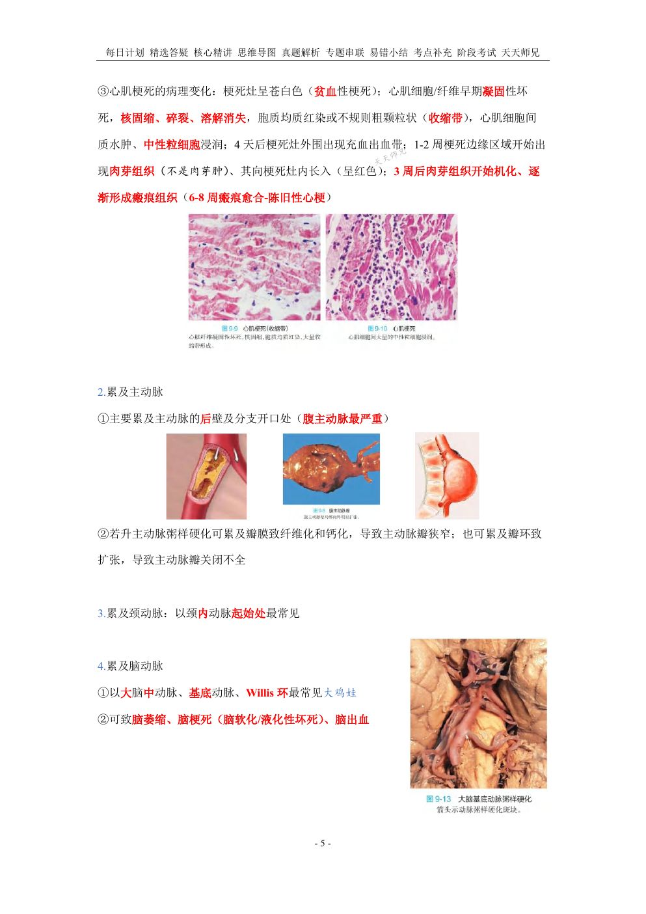
📷 讲义原图 · 第9讲 · 第5页
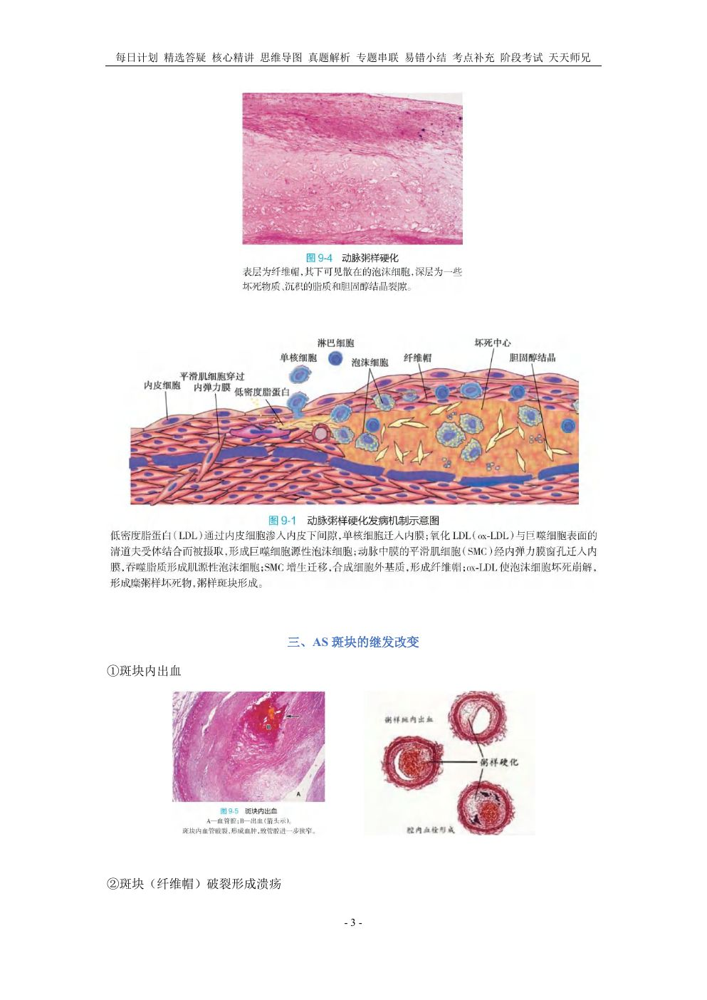
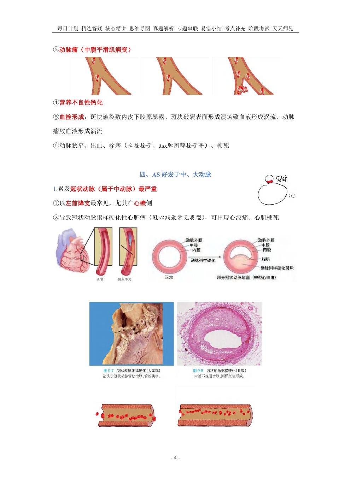
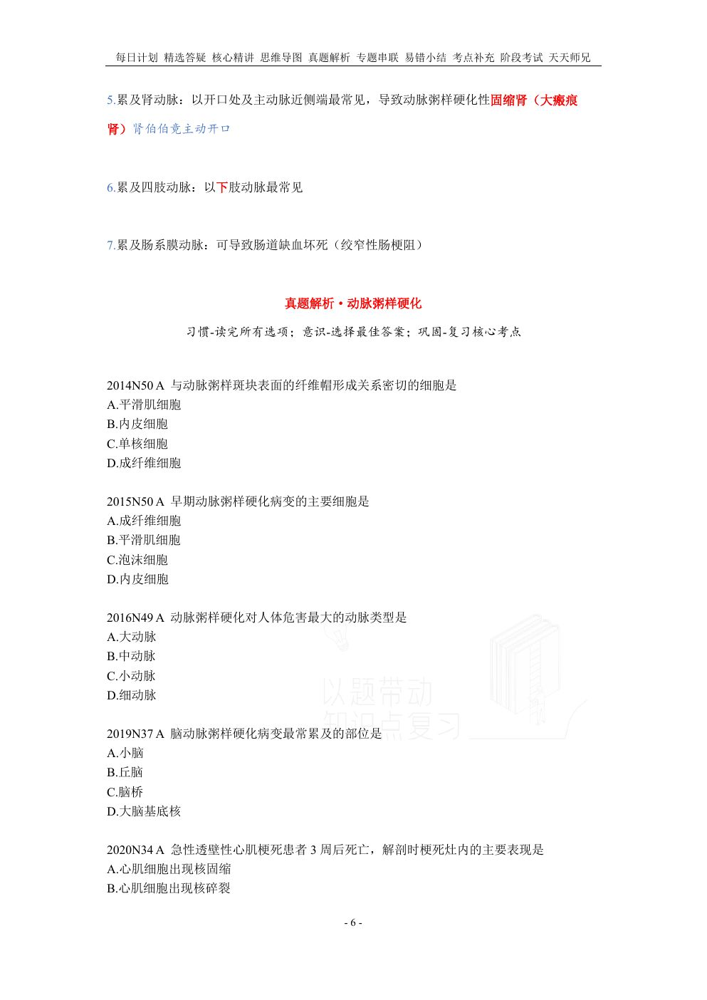
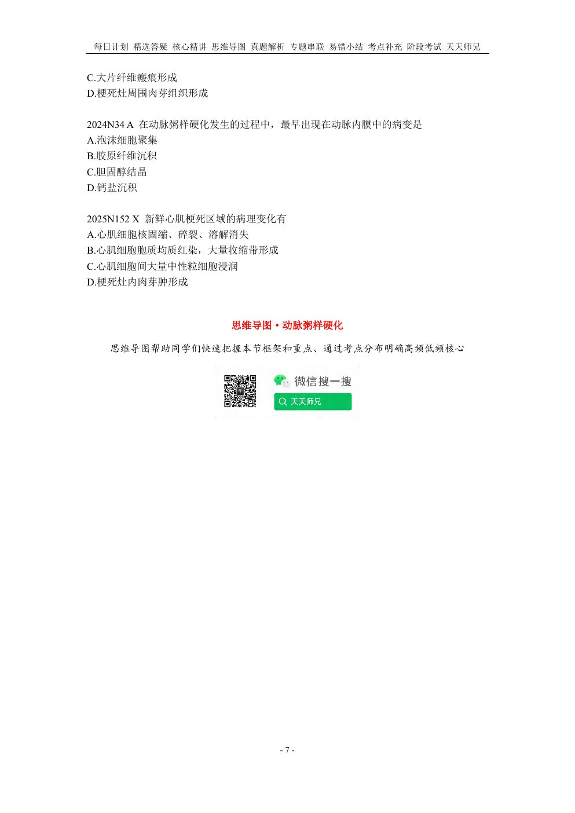